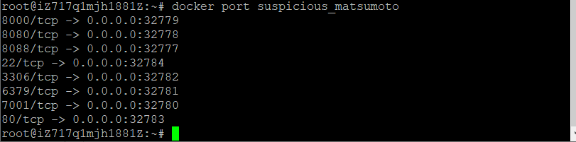
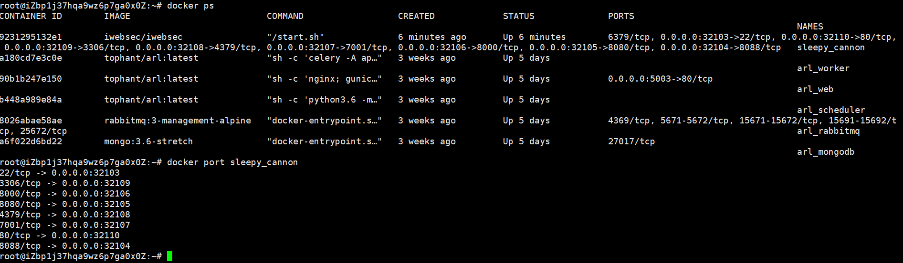
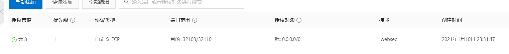

来自之前cnblog的博客
源地址：https://www.cnblogs.com/This-is-Y/p/13430934.html
要看iwebsec直接拉到后面
服务器用的Ubuntu
一键安装：apt install docker.io
我是因为一个叫FuzzScanner的东西才想起来要学docker的
github地址：https://github.com/TideSec/FuzzScanner
这里我拉取了一个镜像：docker pull registry.cn-hangzhou.aliyuncs.com/secplus/tide-fuzzscanner:1.0
启动docker服务：service docker start
查看所有镜像：docker images
查看所有容器：docker ps
查看所有已关闭的容器：docker ps -a
（docker的镜像与容器就像是类与对象的关系，容器是镜像的一个实例）
停止一个容器：docker stop 容器ID或名称
（停止一个容器并不是删除）
删除一个容器：docker rm -f 容器ID或名称
启动一个容器：docker run -it 容器 /bin/bash
参数说明
- -i：交互式操作。
- -t：终端。
- -d：在后台运行，不进入容器
- /bin/bash：放在镜像名后的是命令，这里我们希望有个交互式 Shell，因此用的是 /bin/bash。
- –name 名字：为容器自定义名字，不加这个参数，名字是随机的
退出：exit
（值得注意的是，此时直接用exit退出，会导致容器停止，如果只是像单纯的退出命令行界面，保留该docker容器，应该用ctrl+p）
进入一个容器
**
docker容器内部文件导出：docker cp 容器ID:文件位置 导出文件位置
for example：docker cp 822c9fc1c499:/var/wwwml/api/ /api
从ID为822c9fc1c499的容器中的/var/wwwml/api/的文件复制到 主机/api下
导出容器
docker export 1e560fca3906 > ubuntu.tar
导出容器 1e560fca3906 快照到本地文件 ubuntu.tar
导入容器
cat docker/ubuntu.tar | docker import - test/ubuntu:v1
将快照文件 ubuntu.tar 导入到镜像 test/ubuntu:v1
docker运行一个WEB应用：docker run -d -p 50050:50050 iwebsec/iwebsec
-p 指定一个端口（如果这个容器有多个端口，指定端口操作就需要更多的操作）
查看容器端口情况：docker port 容器名

这是我配置的iwebsec容器，他的80端口映射到了32783端口上。，我要访问这个80端口，就应该访问服务器ip:32783，同时在服务器控制台安全组打开这些端口
2021.1.10
半年后回过头来看，发现自己写了一坨屎在这里👆👆👆👆（上面的东西，md绝了）
iebsec安装：
下载：docker pull iwebsec/iwebsec
启动：docker run -d -p 32104:8088 -p 32105:8080 -p 32106:8000 -p 32107:7001 -p 32108:4379 -p 32109:3306 -p 32110:80 -p 32103:22 iwebsec/iwebsec
这一大串的-p是配置端口，毕竟在云服务器上，80什么的还是有其他的作用，可不能被占了。
查看这个容器端口使用情况

建议端口连起来，这样子在云服务器控制台那边好配置安全组
